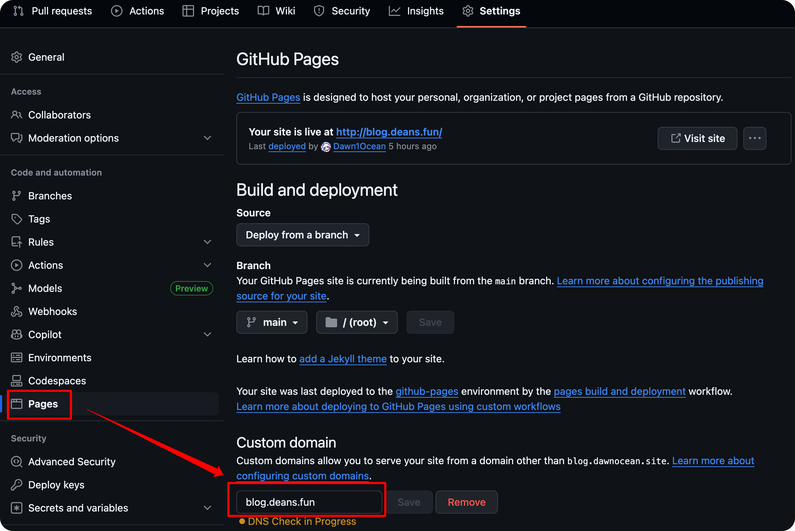

又迁移至新域名！
迁移原因
这次是因为域名续费比较贵……并且 DNSPod 有一个十年长期域名活动，于是花了 230 元购买了十年的域名。大概是不会再迁移了！
自 2025 年 6 月 22 日起，本博客已迁移至dawnocean.site域名下。原域名deans.fun在 7 月 27 日到期前可继续访问。
由于需要将原域名逐渐转移到新域名去，在双域名共存的配置情况下也有了一些经验，就在这里分享一下吧。
GitHub Pages CNAME
Github Pages 对应的 Repository 下包含一个 CNAME 文件，它表明了你的自定义域名。在仓库的 Page 配置页面，只能选择一个自定义域名。
直接在域名 DNS 服务商进行 DNS 配置也是不可以的，会出现“404 There is not a GitHub Pages site here.”的错误信息。
解决办法
我们可以在自己账户下新建一个同样支持 GitHub Pages 的仓库，再绑定自己的另一个自定义域名就可以了。
首先，需要在 DNS 服务商处建立从新域名到 username.github.io 以及原域名到 username.github.io 的 CNAME 解析。
根据 GitHub Pages 的要求，我们需要以下页面：
1 | . |
我们在_config.yml当中填入 GitHub Pages 的配置：
1 | title: xxx |
我们在index.html以及404.html当中设置重定向：
1 | <!-- index.html --> |
1 | <!-- 404.html --> |
最后，在 GitHub 仓库的 Settings - Pages 页面填入原来的域名即可。

本博客所有文章除特别声明外，均采用 CC BY-NC-SA 4.0 许可协议。转载请注明来源 Dean's Blog！

评论